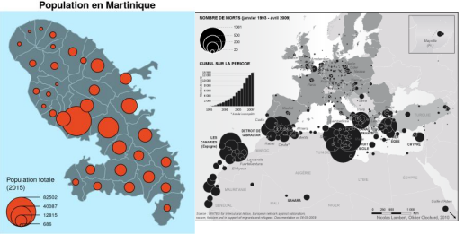
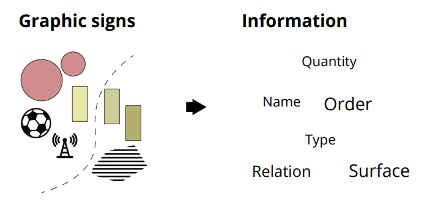
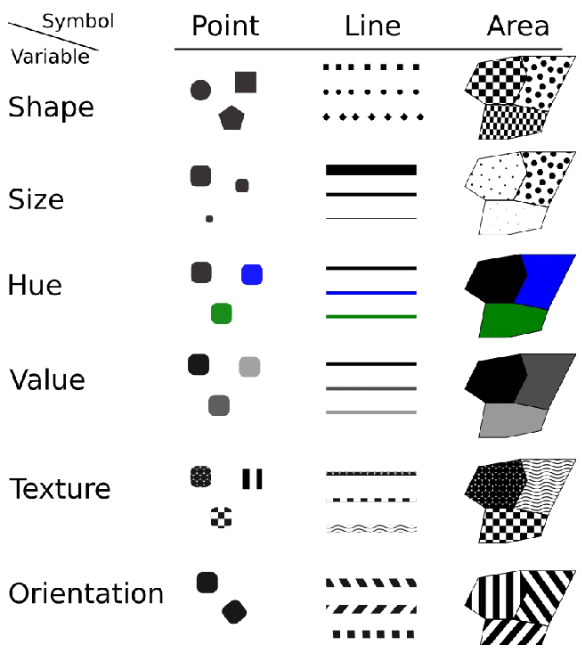
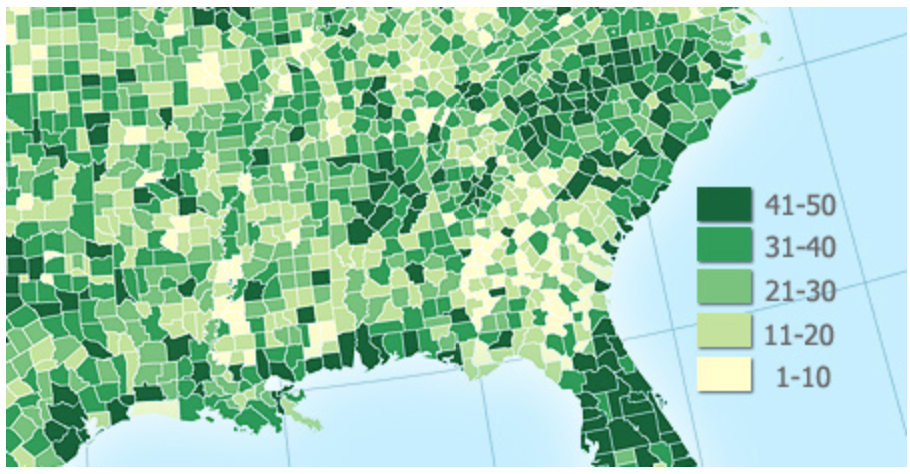
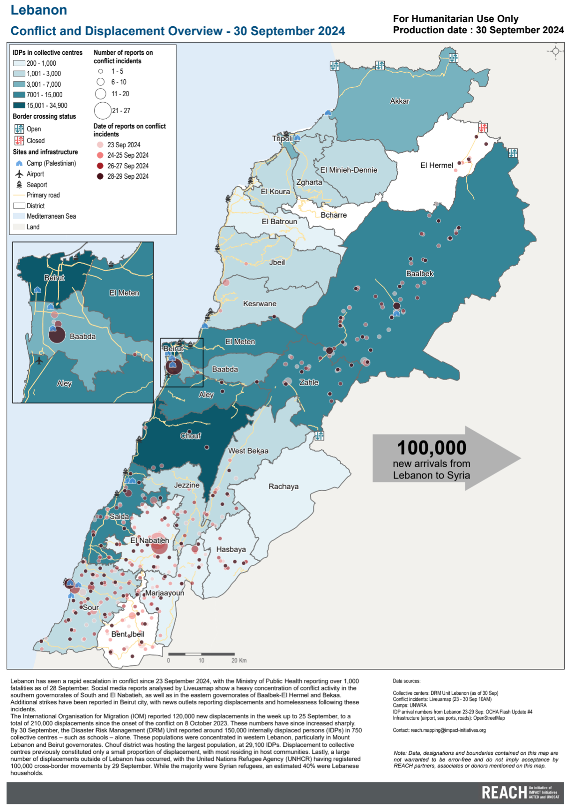

4.1. Symbology and Colours#
The representation of geodata in maps is essential for providing useful location-based insights. This subchapter will cover the basics of good map design, how to create a map design in QGIS, as well as common mistakes when designing or interpreting maps.
In this chapter we will go over the basics of symbology, colours, and how to adjust individual layers in QGIS to create comprehensive maps.
Recap: Types of Maps
In general, there are two main types of maps: topographic maps and thematic maps.
Topographic maps are intended to be exhaustive, including elements fundamental to localisation (localities, road networks, terrain, hydrography). They display the physical location of objects in the real world. The representation of elements in topographic maps is done using conventional signs (e.g. blue for water, green for forests, yellow for agricultural land).

Fig. 4.1 Examples for topographic maps#
Thematic maps display the distribution of specific data or statistically processed information, such as population size, disease incidence, flooding risk, etc. The representation of elements on thematic maps is decided according to the rules of graphic semiology.

Fig. 4.2 Examples for thematic maps#
These two maps use design elements differently. Topographic maps will use symbols and colours out of convention and readability, whereas in designing thematic maps, the symbols and colours you use depend on the context and the information you want to convey.
4.1.1. Visual Variables#

Fig. 4.3 You can use different graphic signs depending on the type of information you want to display.#
Visual variables are the graphical means for visually transcribing information. The visual variables are shape, size, hue, value, texture, and orientation. You can adjust these variables to appropriately represent the data at your disposal. They allows for the expression of relationship of difference, order, association, or quantity between each element, helping to display different information.

Fig. 4.4 Visual variables according to Bertin (1967)#
Caution
Visual perception varies from one person to the next according to various capabilities:
Physiological (e.g. colour blindness)
Transcultural (green = nature, blue = water)
4.1.2. Using visual variables in cartography#
Based on these visual variables, cartographers are able to interpret and communicate information crucial to humanitarian operations. Depending on the use case and the intended audience, you will use different stylings to communicate different data. OpenStreetMap offers several map products: OSM Standard, Tracestack Topo, CyclOSM or the public transportation map, for example. The data behind the maps is the same, but the styling is different. In each case, the cartographers had different goals in mind (e.g., for the cycling map, show the safest biking routes, bike repair stations and resting places) and chose the styling accordingly.

Fig. 4.6 OSM Cycling Map#
In the following dropdowns, you will find different examples of maps used in humanitarian work.
Now it’s your turn!
What type of visual variables or symbolisation methods can you identify in these maps? What kind of information has been communicated in which way (e.g. information about infrastructure, natural landscapes, etc.) What other methods to communicate information can you imagine or do you know? You can also show a map you encountered in your work or personal life.
You can also use maps from you encountered in your work or daily life.
Map Example 1

Fig. 4.7 Flood affected areas and roads in the Somali Region, Ethiopia (Source: OCHA)#

Map Example 3

{kind=link}
{kind=link}
{kind=link}
{kind=link}
Map Example 4

Fig. 4.10 Operational overview or response activity map (Source: Shelter Cluster Vanuata)#
4.1.2.1. Choropleth & Graduated Symbol Maps#
Choropleth and Graduated symbol maps are two common thematic map types used in humanitarian work.
In essence:
Data is divided into areas on the map.
Choropleth maps are maps that show data using colors or shading within specific geographic areas, like countries, states, or counties. It helps to visualize data patterns or distributions across regions. For example, a choropleth map could show population density, where darker shades indicate higher densities and lighter shades indicate lower densities.
Graduated Symbol maps use circles or other symbols of varying sizes to represent data values across different locations. The larger the circle, the higher the data value it represents. This makes it useful for showing quantities or comparing values across different points on a map.
For choropleth maps, colours or shades represent different values for each area. Usually, the darker or more intense colour signifies higher values. The effectiveness of a choropleth map is dependent on the colouring scheme.
Choropleth maps are usually created by classifying geodata into distinct groups, either using categorised or graduated classification.
Graduated symbols maps are created by changing the size of a symbol in relation to a value in the attribute table.
Choropleth maps and graduated symbol maps are ideal for showing patterns over large areas but should be used carefully, as they don’t show exact values within each region, just an overall gradient or level of intensity and they are used in almost every application of mapping and GIS.
{kind=link}

Fig. 4.11 An example of a choropleth map (Source: AxisMaps)#
4.1.2.1.1. Use cases#
Humanitarian Action
In humanitarian action, choropleth maps or graduated symbol maps are used to:
Identify vulnerable regions: Maps can show areas with high poverty rates, conflict, or disaster impact, helping responders prioritize regions most in need of aid.
Track disease outbreaks: For instance, during an epidemic, you can show areas with high infection rates, helping to direct medical resources and prevent further spread.
Monitor food insecurity and famine risks: Maps that illustrate food scarcity help humanitarian organizations focus on regions where food aid is needed the most.
Environmental Science
Show pollution levels: Depict air or water quality across regions, helping to identify polluted areas.
Track deforestation: Maps highlighting forest coverage changes make it easy to spot deforestation trends.
Climate impact: Regions prone to temperature rise or extreme weather can be highlighted to aid climate adaptation efforts.
Public Health
Visualize health disparities: Show regions with high rates of disease, poor access to healthcare, or varying vaccination rates.
Resource allocation: Health authorities use these maps to allocate medical resources based on areas with higher health needs.
Urban Planning and Infrastructure
Display population density: Maps show where populations are concentrated, helping in city planning and infrastructure development.
Identify socioeconomic patterns: Urban planners use these maps to see income, employment, and education levels across neighborhoods.
4.1.3. Symbology and styling#
Depending on the use case and type of geodata at your disposal, there are multiple ways to visualise geodata in a comprehensive format. For example, you can:
You can change the ‘styling’ and colour of the data
Change the thickness, colour of lines, or assign a dash pattern
Change the colour and outlines of polygons
You can assign symbols or pictures to geodata
Change the size, colour and orientation of symbols
You can add text labels
You can change the font, colour and orientation of the text label
For raster data, you can assign a colour gradient for the different values
The styling of a layer is how you communicate the information to your audience. Each data-layer in your QGIS-project has it’s own styling rules. These can range from simple (e.g. display line data as black lines, assigning a colour to polygons) to more complex (e.g. differentiate between different types of roads, add complex fill-patterns to polygons, or add SVG-symbols of varying sizes to ).
4.1.4. Symbology#
Symbology is used to change the look of features on a map
It makes maps more visually appealing and easier to read
Colours and styles represent a specific information
Symbology is applied to layers, but within the same layer we can assign multiple styles to features
The symbology of a layer can be changed based on one of the layer’s attributes.
4.1.5. Colours#
Colours are arguably the most striking visual variables as they are easily distinguishable. However, depending on the type of data and the information you wish to convey, there are a few things to consider when choosing a colour scheme for your map. The most important variables for colours are the hue, the value (saturation) and the transparency.
Colours schemes can be categorial, sequential, or diverging. If you wish to display different types of buildings or roads, the colour schemes should be categorial. Colour gradients, either sequential or diverging, are used for numerical data or data that can be ordered. For example, for the population sizes of districts a sequential colouring schemes is best to show the relative difference between the values. However, if the data has positive and negative values, a diverging colour gradient should be used.

Fig. 4.12 Different types of colouring schemes.#
When choosing colour gradients, a clear gradient from lighter to darker colours is usually the most appropriate, as the gradation is easily distinguishable and translates well into black and white. In the figure below, examples A and B are not good colour schemes, as it is difficult to make out the gradation and it does not translate well into black and white. You can achieve a clear sequence by grading the saturation of the colour gradient.

Fig. 4.13 Examples for different colour gradients translated into black and white. Pay attention to the saturation gradient under each example. Source: Stauffer, Reto & Mayr, Georg & Dabernig, Markus & Zeileis, Achim. (2014). Somewhere Over the Rainbow: How to Make Effective Use of Colours in Meteorological Visualizations. Bulletin of the American Meteorological Society. 96. 140710055335002. 10.1175/BAMS-D-13-00155.1.#
Colour gradients can also encompass multiple hues:

Fig. 4.14 Single hue gradient on the left; Multiple hue gradient on the right.#
Tip
The Colourbrewer website is a quick and useful tool to select and generate colour palettes for your use case.
4.1.5.1. Colourblindness#
When choosing the colours, you have to keep in mind that colour gradients (especially diverging Red-Green gradients) can be hard or impossible to distinguish for people with colour blindness.

Fig. 4.15 Different Colour schemes for the Colour Vision Impaired; Source: Jenny, Bernhard, and Nathaniel Vaughn Kelso. (2007). Color Design for the Color Vision Impaired. Cartographic Perspectives, no. 58 (September 1, 2007): 61-67. https://doi.org/10.14714/CP58.270#
4.1.6. Complex Maps#
The different symbolisation methods discussed in this chapter can be combined in different ways to create sophisticated reports and maps. By combining several methods, you can communicate different phenomena intuitively to the reader. A classical example is a combination of a choropleth map (graduated colours) with a proportional circles map (see Fig. 4.16).
Complex Map 1:
{kind=link}

Fig. 4.16 A complex map using graduated colours and proportional circles (Source: REACH)#
Complex Map 2:

Fig. 4.17 A complex map combining layer styling and different visual variables to communicate a complex situation (Source: SIMS).#
Complex Map 3:

Fig. 4.18 A complex map using graduated colours to signify flood depth as well as the flood hazard for IDP sites (Source: REACH)#
Now it’s your turn!
Fig. 4.16, Fig. 4.17 and Fig. 4.18 make use of graduated colours as well as graduated symbols. What other symbolisation principles can you detect on these maps?
Now that we have learned the different visual variables, and know how to use them to create complex maps, the next chapter Symbology for Vector data will explain how to set up different symbolisation and styling methods in QGIS.